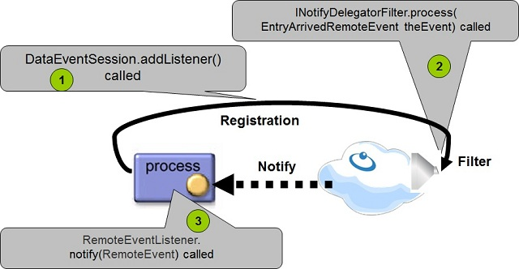
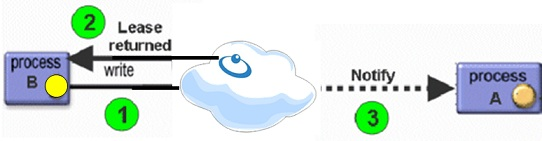

In some cases, SBA applications require the ability to call the user's business logic once a relevant event occurs in the space. This can be a trader desk application that is notified when a quote stock object modifies its data, or when a matching engine removes/updates a matched order. The space supports a message delivery mechanism that allows clients to register for matching events inside the space - aka Continuous query. Once a matching event occurs in the space, the space triggers an event and notifies the client by calling the client business logic.
The Event Session API is the low level API for notifications. It is preferable to use the high level Notify Container with simple continuous query scenarios. You can use the Notify Container programmatically using its SimpleNotifyContainerConfigurer.
Basic Flow:
The JavaSpaces API includes the standard notify method, that allows an application to receive notifications once a new Entry has been written into the space. To receive notifications, the client application needs to register for notification delivery.
The most important part of the notify registration is preparing the right template - all Entries that match the template (conducted by the appropriate operation), trigger an event back to the registered client application.
When a new Entry that matches the template arrives at the space, the notify method of the RemoteEventListener in the registration is invoked, supplying the client with a RemoteEvent object.
When using the Session Event API, you should implement 3 basic routines:
Register for notifications.
Filter the events before sent to the client (optional).
Receive the event.

The session-based messaging API is designed with the following objectives:
Simple and unified interfaces
Single entry point - users access all the event-related services from a single entry point.
Extensibility - allows simple extensions for other types of event services, as well as other configuration parameters.
Backwards compatibility - coexists with the existing API in a way that allows a deprecation period without duplicating the code.
Support for Spring bean creation/configuration.
Batch notification support.
Some advanced options supported with the Session messaging API:
No client codebase needs to be set.
Support registering large amount of listeners using the same session reducing resource consumption.
Provides the ability to get the Entry that triggered the event in the space.
Allows registration for specific notification events, for example, write, update, take, and lease expiration events.
Option delivering events in FIFO order (default is non-FIFO).
Supports server-side notification filtering capabilities.
The session API provides a convenient and efficient mechanism for sending messaging to multiple recipients through the space. Every recipient can register for notifications by creating a DataEventSession object.
When using EventSession in several threads, each thread should create and use its own EventSession.
The sender of the message can write an Entry with a limited lease time to the space. The recipients receive the Entry through the remote event. New recipients have the opportunity to get old messages from the space through read. The messages are cleaned automatically by the expiration mechanism.
Event registration is available with all supported space topologies. Each topology allows the client to receive the event. Still, there are behaviors you should be aware of when deploying the application.
When registering for notifications with a remote space, the space performs a remote call when delivering the event to the client application.
When the client registers for notifications running in the same JVM as the space, no remote calls are involved. This allows fast notification delivery without serialization of the object that started the event.
When deploying a replicated space, you might want to replicate notify registration from the source space (primary) to the replica (backup space), allowing the replica space to continue and send notifications in case the source space failed.
Receiving events occurs as a result of data replication, and not directly from a client-space operation. This is popular in WAN-based applications, where a remote client running in the remote site wants to be notified when an operation occurs in the source space, without getting the actual notification from the remote source space, but from a replica space that is located at its local site.
The most common requirement when deploying partitioned spaces is to register the notification to all partitions, and receive the notifications from all partitions when a matching event is identified. This is the default behavior of the partitioned space.
When registering for notifications using a proxy running in the [local cache], notifications are delivered from the master space. Any matching event in the master space is delivered to the registered client. Events in the local cache are not delivered to the registered client, unless you specifically register for events by getting the local cache proxy.
When registering for notifications using a proxy running in the [local view], notifications are delivered from the local view. These do not involve remote calls and are based on activities performed in the local view. The events do not affect the remote master space or other clients accessing the master space. The events delivered from the local view are relatively fast, and do not involve serialization. Since notifications received from the local view are based on the local view query filter, the registered client might not receive events that other clients, registered for notifications using the master space, receive.
The Local view uses the replication mechanism to update the local view.
Sessions are created with the space.newDataEventSession method.
Every session is configured according to an EventSessionConfig object and is bound to a transaction.
Example:
EventSessionConfig config = new EventSessionConfig();
DataEventSession session = space.newDataEventSession(config);
Here is an example for creating the DataEventSession and registering for notifications using simple template and canceling the registration:
public class DataSessionEventExample implements RemoteEventListener
{
public void simpleTemplate() throws Exception
{
EventSessionConfig config = new EventSessionConfig();
DataEventSession session = space.newDataEventSession(config);
EventRegistration registration = session.addListener(new MyData(),this,Lease.FOREVER,null,null);
// wait for notifications
session.removeListener(registration );
session.close();
}
}
Here is an example for creating the DataEventSession and registering for notifications using a SQLQuery}template and canceling the registration:
public class DataSessionEventExample implements RemoteEventListener
{
public void sqlTemplate() throws Exception
{
EventSessionConfig config = new EventSessionConfig();
DataEventSession session = space.newDataEventSession(config);
SQLQuery query = new SQLQuery (new MyData() , "m_integer > 22 and m_long > 15");
EventRegistration registration = session.addListener(query ,this,Lease.FOREVER,null,null);
// wait for notifications
session.removeListener(registration );
session.close();
}
}
When a client expects to receive a large amount of events, it is recommended to deliver the events from the space into the client in batches. Batch notifications minimize the amount of remote calls the space needs to perform in order to deliver the events to the client. The downside when using this approach is the potential of some latency issues when delivering the events to the client.
public class DataSessionEventExample implements RemoteEventListener
{
public void batchNotify() throws Exception
{
final long TIME = 5000;
EventSessionConfig config = new EventSessionConfig();
config.setFifo(true);
// setting batch size to 3 entries
config.setBatch(3, TIME);
DataEventSession session = space.newDataEventSession(config);
EventRegistration registration = session.addListener(new MyData(),this,Lease.FOREVER,null,null);
// wait for notifications
session.removeListener(registration);
session.close();
}
}
The session-based API defines an entity called EventSession – a stateful registration service that is used to register/un-register listeners to the space.
The EventSession is created using the space.newDataEventSession method, and configured using the EventSessionConfig entity.
The EventSessionConfig can be configured using:
The created session is bound to a specific space (or cluster), and can be bounded to a specific transaction. Closing a session is done via the close() method.
The EventSession interface includes the following methods:
public interface EventSession
{
EventSessionConfig getSessionConfig();
void close() throws RemoteException, UnknownLeaseException;
}
The DataEventSession is a unified class that encapsulate the capabilities of the:
NotifyDelegator
NotifyDelegatorMultiplextor
The addListener() method on the DataEventSession receives, among other parameters, the NotifyActionType parameter:
NOTIFY_WRITE
NOTIFY_TAKE
NOTIFY_UPDATE
NOTIFY_LEASE_EXPIRATION
NOTIFY_NONE
NOTIFY_UNMATCHED
NOTIFY_MATCHED_UPDATE
NOTIFY_REMATCHED_UPDATE
This type is a type-safe replacement for the old NotifyModifiers constants. Notifications for expired objects sent both from the primary and the backup space (in case you have such).
The DataEventSession interface includes the following methods:
public interface DataEventSession extends EventSession
{
EventRegistration addListener(Object template,RemoteEventListener listener,long
lease,MarshalledObject handback,
INotifyDelegatorFilter filter,NotifyActionType actionTypes)
throws RemoteException, TransactionException;
EventRegistration addListener(Entry template,RemoteEventListener listener, long lease,MarshalledObject handback,
INotifyDelegatorFilter filter,NotifyActionType actionTypes)
throws RemoteException, TransactionException;
void removeListener(EventRegistration registration) throws RemoteException, UnknownLeaseException;
}
The EventRegistration is a utility class used as a return value for event-interest registration methods. Objects in this class encapsulate the information needed by a client in order to identify a notification as a response to a registration request, and to maintain that registration request. It is not mandatory for an event-interest registration method to use this class.
A registration of interest in an event that occurs in the scope of a transaction is leased in the same way as other event interest registrations. However, the duration of the registration is the minimum length of the lease and the duration of the transaction. In other words, when the transaction ends (either because of a commit or an abort) the interest registration also ends. This is true even if the lease for the event registration has not expired, and no call has been made to cancel the lease.
net.jini.core.event.EventRegistration implements Serializable
{
//Returns the identifier that will be used in all RemoteEvents generated for
//this interest registration.
long getID()
//Returns the Lease object for this registration.
lease getLease()
//Returns the value of the sequence number on the event kind that was current
// when the registration was granted, allowing comparison with the sequence number
// in any subsequent notifications.
long getSequenceNumber()
//Returns the source that will be used in all RemoteEvents generated for this interest registration.
Object getSource()
}
This class is used to configure an EventSession. It contains a set of configuration parameters that influence the way event listeners are registered with the space, and how event notifications are processed.
There are three different ways to create an EventSessionConfig object:
Properties object, that contains a list of parameters according the a list specified below, to the constructor.config directoryThe names of the parameters that can be used in the Properties object or file:
comType – specifies the communication protocol: UNICAST/MULTIPLEX.batchSize – buffered notifications – the size of the batch used when sending notifications to the client. Must be used with batchTime.batchTime – the maximum elapsed time between two batch notifications. Must be used with batchSize.replicateNotifyTemplate – whether to replicate the registration to other spaces in the cluster.triggerNotifyTemplate – whether to send notifications from all spaces in the cluster.leaseListener – LeaseListener callback to be called in case the renew failed.fifo – whether to return notification in fifo order or as soon as possible.autoRenew – whether to automatically renew the lease of the registered listeners.renewExpiration – specifies the time of expiration of the registration. Used when autoRenew=true.renewDuration – specifies the time for each renew. Used when autoRenew=true.renewRTT – specifies the time that takes the Lease to renew. Used when autoRenew=true.The RemoteEventListener interface should to be implemented to receive the notification from the space. The class implementing this interface does not need to be the object that originally registered interest in the occurrence of an event. To allow the notification of an event's occurrence to be sent to an entity other than the one that made the interest registration, the registration call needs to accept a destination parameter, which indicates to which object the notification should be sent. This parameter must be an object which supports the RemoteEventListener interface.
public interface net.jini.core.event.RemoteEventListener extends Remote, EventListener
{
//Notify the listener about an event.
public void notify(RemoteEvent theEvent) throws UnknownEventException,RemoteException
}
Below, the DataSessionEventExample implements the RemoteEventListener. The EntryArrivedRemoteEvent is used to retrieve the object that starts the event:
public class DataSessionEventExample implements RemoteEventListener
{
public void notify(RemoteEvent theEvent) throws UnknownEventException, RemoteException
{
try {
EntryArrivedRemoteEvent arrivedRemoteEvent =(EntryArrivedRemoteEvent) theEvent;
MyData msg = (MyData) arrivedRemoteEvent.getObject();
// ...
} catch (Exception ex) {
ex.printStackTrace();
}
}
}
The EntryArrivedRemoteEvent allows you to retrieve the object that triggered the event, as well as retrieving additional meta data about the event.
The EntryArrivedRemoteEvent extends the RemoteEvent, and implements the Externalizable and Cloneable interfaces.
The EntryArrivedRemoteEvent includes the following methods:
// Returns a shallow copy of this EntryArrivedRemoteEvent instance.
Object clone();
// Returns the ExternalEntry that triggered the specified remote event.
ExternalEntry getExternalEntry();
String getKey();
// Returns a notify type of this event.
int getNotifyType();
// Returns the entry by specification of user.
Object getObject();
MarshalledObject getRegistrationObject();
Object getSource();
//Returns the unique uid of the space the event originated from.
Uuid getSpaceUuid();
//returns templateID
String getTemplateUID();
// specific is the event comes from replication or not.
boolean isFromReplication();
When a partitioned space is started each partition getting list of existing notify registrations from the other partitions. This is useful when the partition fails and restarted. This avoids the client side to re-issue a new notify registrations against the restarted partition. If you are not using notifications or running a partitioned space with backups you may disable this mechanism using the cluster-config.notify-recovery property (boolean property). This will speed up the space deployment time since when a partition looking for the other partitions and these have not been started yet, it might take some time for the entire clustered space to be fully available. By default this property is enabled (true).
To cancel the notify registration, call the following:
DataEventSession removeListener(EventRegistration registration)
This frees the relevant resources allocated to manage the notify registration, such as cancelling the automatic lease renewal, un exporting object client stubs, and releasing the client FIFO thread.
To close the session, call the following:
DataEventSession.close();
This cancels all the registrations done with the DataEventSession. You need to start a new session in order to register for new events.
The session messaging API allows for space-side notify filtering. To control the events delivered to the client, implement the INotifyDelegatorFilter interface, pass the object implementing the INotifyDelegatorFilter, and return a false value from the INotifyDelegatorFilter.process for events you do not want to be sent to the registered client.
The INotifyDelegatorFilter allows you to execute business logic at the space side before the event is delivered to the client. The INotifyDelegatorFilter might prevent a specific event from being delivered to the client registered for the matching event, by returning false from the process method.
The INotifyDelegatorFilter interface includes the following methods:
public interface INotifyDelegatorFilter extends Serializable
{
// called when the filter created
public void init( IJSpace space, Object notifyTemplate );
// called before the event delivered to the client. Returning false will not
// deliver the event to the client
public boolean process( EntryArrivedRemoteEvent theEvent);
// called when the registration cancelled
public void close();
}
Below is an example for the INotifyDelegatorFilter implementation, where the process() method allows only messages with the value aaa to be delivered to the client:
package com.j_spaces.examples.sessionevent;
import net.jini.core.entry.Entry;
import net.jini.core.entry.UnusableEntryException;
import com.j_spaces.core.IJSpace;
import com.j_spaces.core.client.EntryArrivedRemoteEvent;
import com.j_spaces.core.client.INotifyDelegatorFilter;
public class MyNotifyFilter implements INotifyDelegatorFilter
{
public void init(IJSpace space, Object entry)
{
System.out.println(" ->> Init called - Registration Template:"+entry);
}
// only messages with m_string = aaa will be delivered to the registered client
public boolean process(EntryArrivedRemoteEvent theEvent)
{
EntryArrivedRemoteEvent arrivedRemoteEvent = (EntryArrivedRemoteEvent) theEvent;
MyData msg;
try {
msg = (MyData) arrivedRemoteEvent.getObject();
int notifyType = arrivedRemoteEvent.getNotifyType();
String msgStr = " ->> process called - Type:" + DataSessionEventExample.getNotifyDesc(notifyType)+" - Data:" + msg ;
System.out.println(msgStr);
return (msg.m_string.equals("aaa"));
} catch (UnusableEntryException e) {
e.printStackTrace();
}
return false;
}
public void close()
{
System.out.println(" ->> closed called");
}
}
The notify registration:
EventSessionConfig config = new EventSessionConfig();
DataEventSession session = space.newDataEventSession(config);
MyNotifyFilter filter = new MyNotifyFilter ();
EventRegistration registration = session.addListener(new MyData(),this,Lease.FOREVER,null,filter);
When writing the following objects, only msg1 is delivered to the client who registered for notifications:
MyData msg1 = new MyData("aaa", new Long (100 ) , new Time(10,5,20) ,
new Date (107, 10, 40),new Integer (60 ) ,new Double (500.2));
MyData msg2 = new MyData("bbb", new Long (100 ) , new Time(10,5,20) ,
new Date (107, 10, 40),new Integer (60 ) ,new Double (500.2));
space.write(msg1, null, Lease.FOREVER);
space.write(msg2, null, Lease.FOREVER);
The INotifyDelegatorFilter implementation class should be part of the space classpath.
When having a system that requires large number of listeners (above few hundreds) the Multiplex communication mode should be used. With this mode the amount of resources (threads) used to invoke the listener are shared between all the session listeners. This approach reduces the memory footprint of the client considerably. This option avoiding the need to construct multiple [notify containers|notify container] that may consume large amount of resources when having many of these created. See below how the MULTIPLEX communication mode should be used:
EventSessionConfig config = new EventSessionConfig();
config.setComType(ComType.MULTIPLEX);
DataEventSession session = space.newDataEventSession(config);
for (int i=0;i<100;i++)
{
Listener lisenter = new Listener("Listener " + i);
SQLQuery<MyData> query = new SQLQuery<MyData>(MyData.class , "key1='A"+i+"'");
EventRegistration registration = session.addListener(query,lisenter,Lease.FOREVER,null,null);
}
Event Session under the hood uses Notification Registration. When a remote client with an independent life cycle creates a Event Session and is terminated, the registration remains in the space. This may create an overhead for the space once there are other clients registered with many templates.
To avoid this overhead, an optimization is required where notification registration is created with a limited lease and the client periodically renews the lease to keep it active. If client is shutdown or does not need this events anymore, the lease is not renewed thereby removing the registration.
Lease Renewal Manager provides a systematic lease renewal and management framework and is used by Event Session for managing the notification registration leases. Leases are managed in an automatic manner without any application intervention. More information regarding Lease Renewal Manager can be found at the [Leases - Automatic Expiration] section.
To allow a remote client using an Event Session to continue and receive notifications in case the space cluster was completely shutdown and restarted, you should use the LeaseListener and re-create the Event Session in case its lease renewal failed (i.e. LeaseListener.notify() been called). The Event Session must enable the autoRenew property to instruct Lease Renewal Manager and have the associated LeaseListener implementation to be invoked.
With this approach we assume the space will be available is some point to acknowledge the registration and continue and send notifications for the matching events back to the client.
See below com.gigaspaces.events.EventSessionConfig methods you should use passing the LeaseListener implementation:
setAutoRenew(boolean renew, net.jini.lease.LeaseListener listener)
setAutoRenew(boolean renew, net.jini.lease.LeaseListener listener, long renewExpiration, long renewDuration, long renewRTT)
| Property | Description | Default | Unit |
|---|---|---|---|
| renew | If set to true, automatically performs lease renewal and call the LeaseListener.notify() if fails to renew, where the lease's desired expiration time has not yet been reached. |
false | |
| renewExpiration | The period of time your notifications stopped from being renewed. Applies Only when renew is true |
Lease.FOREVER | ms |
| renewDuration | The period of time that passes between client failure, and the time your notifications stop from being sent. Should be larger than renewRTT. Applies Only when renew is true. |
20000 | ms |
| renewRTT | RoundTripTime - The time that takes to reach the server and return. Applies Only when renew is true. |
10000 | ms |
Prior calling the LeaseListener.notify() , the LeaseRenewalManager used by the Notify container, will remove the affected lease from its managed set of leases.
LeaseListener Implementation:
public class MyLeaseListener implements LeaseListener{
public MyLeaseListener (DataEventSession session)
{
this.session=session;
}
DataEventSession session;
//Called by the LeaseRenewalManager when it cannot renew a lease that it is managing,
//and the lease's desired expiration time has not yet been reached.
public void notify(LeaseRenewalEvent event) {
System.out.println("Can't renew - try to re-register");
session.addListener(new MyData(),this,Lease.FOREVER,null,null);
System.out.println("Notfy ReRegistration Done!");
}
}
The Slow Consumer mechanism allows
Notify registrations are consider to be Transient. Transient registrations are not persistent, and aren't recovered once the space is restarted.
When the space detects a stale notify registration (clients that registered for a notify registration but do not respond to the triggered event), the notify registration is cancelled.
If you need to terminate the notify registration before the lease expires, it is recommended to use the DataEventSession removeListener(EventRegistration registration) method. This cancels the registration lease.
When performing operations using transactions while performing notify registration using a null transaction object, matching events are delivered to clients only when the transaction is committed. Matching events for notify registration using a transaction object are triggered immediately when the operation is called using the same transaction object that is used as part of the notify registration.
Use Lease.FOREVER as the notify registration lease time carefully. Registration for notifications is cancelled automatically when the notification object invalidates – i.e. is cleared by the garbage collector. With abnormal termination of the application, the garbage collector cannot finalize the registration object. This might lead to delays when delivering notifications to live clients, because the space accumulates notification registrations without the ability to clear these once they are invalidated.
The space includes a mechanism that detects stale notify registrations. Once a notification can't be delivered to a client (network failure or a dead client), the space retries to send the notification several times (according the space-config.notifier-retries parameter value) and once it fails, the notify registration is removed. If there are many clients terminating their operation in an abnormal manner while having an active event registration, the space might need some time to detect all stale clients and their notify registrations, delaying notification delivery to existing live clients.
The root cause of this behavior is the thread pool within the space engine that is responsible for delivering events to clients. When all pool threads are fully consumed, notification delivery time suffers, due to the time it takes to detect and remove all stale registrations.
To configure the notification thread pool size you should use the following Space properties:
space-config.engine.notify_min_threads
space-config.engine.notify_max_threads
See the Scaling Notification Delivery for details.
To reduce the amount of stale registrations, register notification with a reasonable lease time (30 seconds - 2 minutes can be a good interval), and renew these using the LeaseRenewalManager every 30 seconds - 2 minutes. This ensures that once the client exists in an abnormal manner, the registration automatically expires and is removed, reducing the chance to fully consume the notification thread pool and delay notification delivery to live clients.
When the space is running in a different JVM than the client that is registered for the notifications, remote calls between the space and the notified client are involved. This means that the object that triggered the notification sent as part of the RemoteEvent is serialized at the space side, and de-serialized at the client side when delivered to the client. To minimize the impact of the serialization process, it is recommended to implement the Externalizable interface – this optimizes the footprint of the delivered packet across the network.
When registering for notifications in FIFO mode, a special thread at the client side is responsible for delivering the events to the listener in FIFO order. By default, the space uses a dedicated thread pool to trigger the events at the client side, where the client itself is using another thread pool to call the listener notify method implementation.
The FIFO thread at the client side uses the event sequence number generated in the space to order the incoming events handled by the different threads, and calls the listener in the right order. Since the ordering requires some amount of synchronization, FIFO-based notifications are slower than non-FIFO notifications.
For the custom client-side FIFO-based notifications example, send a request to support@gigaspaces.com.
Notifications are asynchronous by nature. The client that triggered the notification is unaware of the notification delivery, and does not wait for an acknowledgement from the client receiving the notification for successful arrival of the event before continuing with its operation – i.e., when process A registers for notification delivery, and B writes an Entry to the space, process B does not wait for process A to receive the notification before taking control after the write operation. Process B might perform additional space operations before process A receives the notification.

When a space running in a fault tolerant configuration (primary-backup or partitioned cluster schemas) and the primary space fails, the backup space takes over and sends the notifications to the registered clients. In such a configuration, the primary and backup spaces do not establish a handshake mechanism when a notification is sent to the client. The backup space, that is running in stand-by mode, is unaware of the notifications that have been sent by the primary space, and the acknowledgement that the recipients clients provided when receiving the events is not sent.
To allow the backup space to send notifications when the primary fails and move to active mode, the backup space should have the notification registration information (notify templates) replicated/recovered from the primary space. The cluster configuration includes the following properties allowing notification registrations to survive space failures:
replicate-notify-templates – boolean value. Set to true if you want to make notification templates available in the target space.trigger-notify-templates – boolean value. Set to true if you want to trigger matching notification templates when Entries are written to the space, because of replication (and thus causing remote events to be generated and sent to the notify template listeners). If set to true, triggering occurs; if set to false, triggering does not occur.The replication settings allows replicating notification registration, and the ability to trigger events that are a result of replication (and not a direct client operation) from a source space.
Here is the system behavior when using these options:
| Replicate Notify Template Setting | Trigger Notify Template Setting | Description |
|---|---|---|
| true | false | The client gets notifications from the master space while it is active after registration. If failover has been configured, it gets notifications from the replica space when the master space fails. |
| false | true | The client gets notifications only from the spaces it registered to for notifications. A notification occurs when data has been delivered to the space, either by a client application, or from the replication. |
| true | true | The client gets notifications from all clustered spaces after registration. The client gets multiple notifications for every space event. |
| false | false | The client gets notifications only from the spaces to which it registered. The client does not get notifications from spaces that received their data by replication. |
Replicated notify templates and triggered notify templates are orthogonal. However, if you enable them both, you should be aware that for each Entry that matches the notify template and is replicated to another space, you get an event.
This might result in more events than you initially intended. You can use the source of the event to check which space triggered it.
Due to the asynchronous nature of notification delivery, when a primary space fails right after replicating an operation to the backup space and before sending the notification to the registered client, the backup space might not be able to send the missing notifications, since it is in the process of moving to active mode. This means that during this very short period of time, the registered client might not receive events that occurred in the primary space and were replicated to the backup space.
To ensure notification delivery by the backup space during the failover period, durable notifications mode needs to be enabled:
EventSessionConfig config = new EventSessionConfig();
config.setDurableNotifications(true);
DataEventSession session = space.newDataEventSession(config);
Durable notifications are based on the replication mechanism and as such have some different semantics regarding other EventSessionConfig parameters.
For further details see Durable Notifications.
The UNMATCHED NotifyActionType should be used when you would like to receive notifications for objects which got their value been updated where the object that was initially matches the template no longer matches the template.
Example: You would like to maintain within the client side a list for all the objects which got their status as true. You register for notifications using a template which had the status field as true.
An object with status as true is written into the space. This triggers a notification about the existence of this object. In some point the object is read from the space, the status field value changed from true to false and the object is written back into the space with its updated data.
Registering a notification using a template which got status=true with the NOTIFY_UPDATE NotifyActionType without using the UNMATCHED NotifyActionType as well, will not trigger a notification when the status field value changed from true to false.
You have to include the UNMATCHED NotifyActionType to receive a notification when the object changing status=true to status=false.
The MATCHED_UPDATE NotifyActionType should be used to receive notifications for entries that match a given notify template after being updated and did not match before that update.
Example:
template = new Pojo(null, true);
eventSession.addListener(template, listener, Lease.FOREVER, NotifyActionType.NOTIFY_MATCHED_UPDATE)
myPojo = new Pojo("1", false); // myPojo, before update, doesn't match the template.
gigaSpace.write(myPojo);
myPojo.setProcessed(true);
gigaSpace.write(myPojo); // myPojo, after being updated, matches the template.
The last operation (updating myPojo's "processed' property from false to true) will trigger the NotifyActionType.NOTIFY_MATCHED_UPDATE notification.
NOTIFY_MATCHED_UPDATE and NOTIFY_UPDATE cannot be used together for the same listener.
The REMATCHED_UPDATE NotifyActionType should be used to receive notifications for entries that match a given notify template after being updated and that were also a match before that update.
Example:
template = new Pojo(null, false);
eventSession.addListener(template, listener, Lease.FOREVER, NotifyActionType.NOTIFY_MATCHED_UPDATE)
myPojo = new Pojo("1", false); // myPojo, before update, matches the template.
gigaSpace.write(myPojo);
myPojo.setProcessed(true);
gigaSpace.write(myPojo); // myPojo, after being updated, still matches the template.
The last operation (updating myPojo's "processed' property from false to true) will trigger the NotifyActionType.NOTIFY_REMATCHED_UPDATE notification.
The first write of myPojo will trigger the NotifyActionType.NOTIFY_WRITE notification if there was also a registration with NOTIFY_WRITE type and the same template.
NOTIFY_REMATCHED_UPDATE and NOTIFY_UPDATE cannot be used together for the same listener.